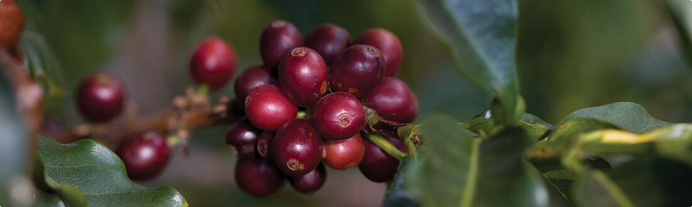

- 
-
커피 농가들과 함께하는 미래 : 100% 윤리적 원두
"커피 농가 지원, 경제/사회/환경적 기준 설립 및 준수, 산업적 협력 및 지역사회 개발 프로그램을 통해 폭 넓은 방식으로
윤리적 원두 구매를 실천하고 있습니다."이러한 접근의 토대에는 C.A.F.E (Coffee and Farmer Equity) Practice 가 있으며, 이는 커피 업계 최초의 제3자를 통해 인증된 지속가능성 기준 중 하나입니다.
고품질의 커피를 장기적이고 안정적으로 공급받을 수 있게 되었으며 커피 농부들은 그들의 삶과 생계 그리고 지역사회에 긍정적인 변화를 경험하게 되었습니다. C.A.F.E Practice는 원두의 품질, 거래 투명성, 사회적 책임 그리고 환경 보호와 같은 네 가지 핵심 영역에 대한 기준을 포함하고 있습니다. 이러한 기준을 준수함으로써, 커피 농가들이 인류와 환경 모두에게 유익한 방법으로 커피를 재배할 수 있도록 돕습니다.